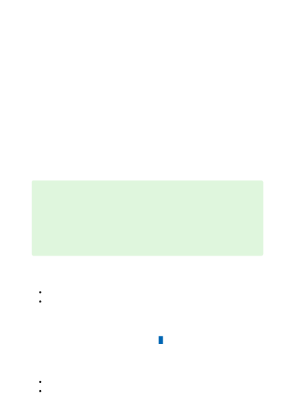

When you create a private endpoint, the DNS CNAME resource record for the Cognitive
Services resource is updated to an alias in a subdomain with the prefix 'privatelink'. By
default, we also create a private DNS zone, corresponding to the 'privatelink'
subdomain, with the DNS A resource records for the private endpoints.
When you resolve the endpoint URL from outside the VNet with the private endpoint, it
resolves to the public endpoint of the Cognitive Services resource. When resolved from
the VNet hosting the private endpoint, the endpoint URL resolves to the private
endpoint's IP address.
This approach enables access to the Cognitive Services resource using the same
connection string for clients in the VNet hosting the private endpoints and clients
outside the VNet.
If you are using a custom DNS server on your network, clients must be able to resolve
the fully qualified domain name (FQDN) for the Cognitive Services resource endpoint to
the private endpoint IP address. Configure your DNS server to delegate your private link
subdomain to the private DNS zone for the VNet.
For more information on configuring your own DNS server to support private endpoints,
refer to the following articles:
Name resolution for resources in Azure virtual networks
DNS configuration for private endpoints
For pricing details, see Azure Private Link pricing .
Explore the various Azure Cognitive Services
Learn more about Azure Virtual Network Service Endpoints
Tip
When using a custom or on-premises DNS server, you should configure your DNS
server to resolve the Cognitive Services resource name in the 'privatelink'
subdomain to the private endpoint IP address. You can do this by delegating the
'privatelink' subdomain to the private DNS zone of the VNet, or configuring the
DNS zone on your DNS server and adding the DNS A records.
Pricing
Next steps